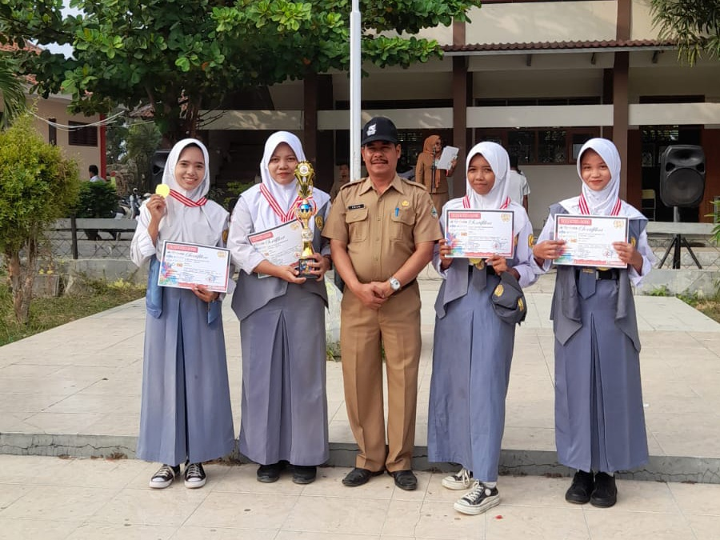

2024
SMAN 1 Jatibarang meraih juara 2 dalam perlombaan GLS (Gerakan Literasi Nusantara) Tingkat Kabupaten Indramayu pada tahun 2024. Kejuaraan ini mendapat banyak pujian serta menjadi suatu kebanggaan bagi sekolah.
Perjuangan selama satu tahun oleh tim GLS SMAN 1 Jatibarang tidaklah sia-sia. Gelar juara 2 yang diraih tidak terlepas dari dukungan, doa, dan usaha para guru serta pihak sekolah.
Prestasi ini menjadi bukti bahwa tingkat literasi di SMAN 1 Jatibarang terus berkembang dengan baik. Melalui berbagai kegiatan membaca, menulis, berdiskusi, dan berkarya, tim GLS berhasil menunjukkan bahwa literasi bukan hanya tentang membaca buku, tetapi juga tentang membangun kreativitas, wawasan, dan karakter siswa.
Dengan diraihnya juara 2 ini, SMAN 1 Jatibarang diharapkan dapat terus meningkatkan kualitas program literasi sekolah agar mampu meraih prestasi yang lebih tinggi pada kesempatan berikutnya.
← Kembali